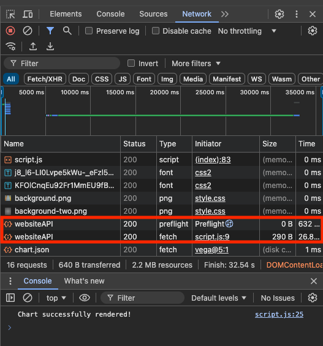

Project Description
For our capstone project, we are aiming to develop a tool, in a form of
static website, hosted entirely on AWS cloud that performs forecasting based on user input on Google Trends data.
Our intended users are small retail business owners who can use this tool to understand how customer demands may
increase or decrease in the future, which would allow the owner to, for example, get additional inventory.
Instructions
Enter a single, key based on interest (e.g., cake). Once entered, the value will be sent to
AWS cloud hosted by Vocareum, processed by NLP and forecasting ML models to return related terms that can be used for follow-up forecasts as well as
an Altair visualization to show forecast figures. There can be some delay after input is entered due to preflight checks and ML processing. We have three recommendations in
order to ensure optimal experience.
1. In order to understand what is happening, we recommend you use developer tools in Chrome by going to options > "More Tools" > "Developer Tools", in the Network section. What happens once you sent an input is that OPTION call is sent first to establish CORS (Cross Origin Resource Sharing). Once that is done, POST method is made and various AWS services together to produce output, which will be returned below. Please note that if you are running for the first time, the OPTION call might not return 200. If that happens, please re-send the input. We suspect this is happening due to initial start up time.

2. Because browsers such as Chrome may cache results, which won't allow the content of the site
to be refreshed, please use Incognito mode, if available.
3. When entering a search term, please make sure
that the term is as specific as possible (i.e., term "mocha" is preferred to "coffee").
WARNING: This tool a demonstrator of applied data science knowledge, so it should not be used, in any capacity, to make any personal or business decisions.
Q: The tool does not seem to work every time. Is that okay?
A: Technically yes, the main focus of our project was on keeping the application lightweight and cost effective, which it is. If we added
robustness criteria, we might have taken a different approach in design.
Q: I see 503 status for preflight check. What does this mean?
A: It indicates that CORS (Cross Origin Resource Sharing) was not established. That being said,
it should definitely pass so please try again.
Q: The return values (e.g., relevant terms) are showing as undefined. What does that mean?
A: Because API Gateway has maximum 30 seconds timeout, the error indicates that application took too long and no response was returned.
This can happen because GTAB library (used for forecasting) can take some time to download Google Trends data. Please retry.
Q: I'm getting a connection error for forecasting. Why is this happening?
A: Because GTAB library (used for forecasting)
relies on PyTrend (unoffical API for Google Trends), sometimes network connection issues occur. During our project this issue seem to persist for a minutes at least
and several days at most. If forecasting status fails, please try a few times and, if it still does not work, please try again later.
Q: I'm getting error for NLP. Why is this happening?
A: That would suggest an issue establishing connection with SageMaker inference endpoint, which posts the NLP process application.
This error shouldn't happen, so if you see it please reach to koigawa@umich.edu.
Q: The returned words and content of the charts do not match. Why is this?
A: This is likely a caching issue. Please refresh the page, making sure you are in incognito mode, and retry.